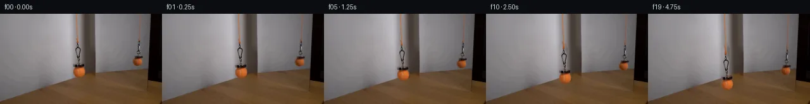
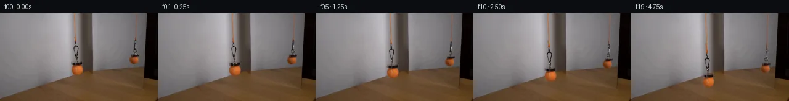
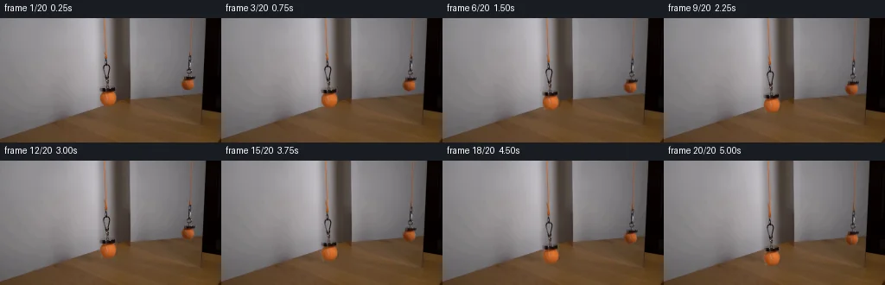
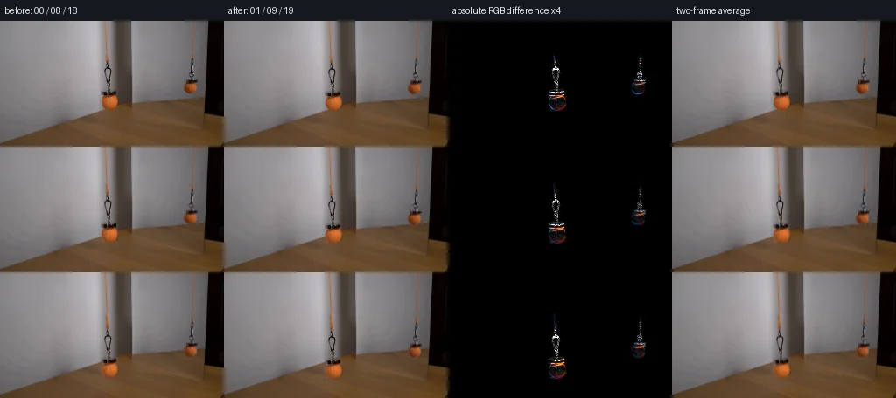

V0 · 初版
2026-11-05T12:21:46.895909+00:00 · RGB 1734f37574ec
![]()
Observable Generation Trace
把最终像素视频、Harness 冻结的每轮候选、真实工具事件和 Agent 自述放在同一页。可观测证据与模型自述分开标记，避免把“模型说它检查过”误当成真实工具调用。
![首帧]()
Static locked-off single-shot with fixed frame throughout filmed with constant framerate in real-time. The scene shows a realistic scientific demonstration. The scene only contains the described setup and actions. The tennis ball attached to a magnet that hangs from an orange cord was hovering in the air in front of the mirror. The mirror creates the illusion of two tennis balls. The tennis ball hanging in front of the mirror is slowly lowered.
首帧显示在左侧播放器初始画面。Track 权限、隔离和 tensor 一致性来自 run manifest，而不是 METHOD.md。
默认勾选初版和最终版；可选其他版本一起同步播放。仅检查图更新的连续重复快照已合并，回退旧视频仍保留为一次修订。
Observable events
来源：events.jsonl + run manifest
此 Track 禁止读取输出图片。逐轮预览由外部 Harness 自动冻结，只用于事后审计，生成 Agent 当时看不到这些页面。
Frozen candidates
每张图来自该 round 的真实 00 / 01 / 05 / 10 / 19 帧

pixels 7af866c56a69c572 · code e204815ccf9f49f5
--- previous/generate.py
+++ current/generate.py
@@ -0,0 +1,186 @@
+"""Deterministic local RGB reconstruction and subpixel layer animation."""
+from pathlib import Path
+import json
+import numpy as np
+from PIL import Image, ImageDraw
+import cv2
+from scipy.ndimage import map_coordinates, gaussian_filter
+from artifact_io import save
+
+ROOT = Path(__file__).resolve().parent
+TMP = ROOT / '.tmp'
+TMP.mkdir(exist_ok=True)
+SOURCE = np.asarray(Image.open(ROOT / 'first_frame.png').convert('RGB'), dtype=np.float64)
+H, W = SOURCE.shape[:2]
+YY, XX = np.mgrid[:H, :W]
+
+
+def polygon(points, supersample=8):
+ canvas = Image.new('L', (W*supersample, H*supersample))
+ ImageDraw.Draw(canvas).polygon([(round(x*supersample), round(y*supersample)) for x,y in points], fill=255)
+ return np.asarray(canvas.resize((W,H), Image.Resampling.LANCZOS), dtype=float)/255
+
+
+def rect(x0,y0,x1,y1):
+ return ((XX>=x0)&(XX<=x1)&(YY>=y0)&(YY<=y1)).astype(float)
+
+# All reconstruction masks are constructed here from numeric scene measurements.
+# There are no external masks, references, models, or generative engines.
+main_support = polygon([(118,0),(123,0),(126,46),(129,54),(129,76),
+ (135,79),(137,91),(135,99),(129,103),(120,103),(114,99),
+ (113,81),(118,78),(118,53),(120,46)])
+ref_support = polygon([(220,0),(225,0),(222,42),(224,60),(223,65),
+ (227,67),(228,77),(224,84),(215,85),(208,80),(208,69),
+ (212,65),(214,58),(216,42)])
+support = np.maximum(main_support, ref_support)
+fill_mask = (support>0.015).astype(np.uint8)*255
+clean = cv2.inpaint(SOURCE.astype(np.uint8), fill_mask, 4, cv2.INPAINT_NS).astype(float)
+
+# Restore the reflected backdrop by fitting its gentle horizontal RGB gradient
+# from unoccluded samples, separately for each row.
+for y in range(64,86):
+ xs = np.r_[np.arange(201,208), np.arange(229,234)]
+ for c in range(3):
+ coef = np.polyfit(xs-218, SOURCE[y,xs,c], 2)
+ clean[y,208:229,c] = np.polyval(coef,np.arange(208,229)-218)
+
+# The foreground silhouette hides a wall/table junction. Reconstruct the wall
+# using the measured column profile and lighting falloff in an adjacent column,
+# and extrapolate the tabletop from the unoccluded same-column samples below.
+wall_reference = clean[75].copy()
+for x in range(113,138):
+ response = float(np.clip((136-x)/23,0.22,1.0))
+ # Median removes JPEG-size color variation without removing the RGB gradient.
+ wall_color = np.median(clean[71:77,x],axis=0)
+ wall_anchor = np.median(SOURCE[71:77,110],axis=0)
+ table_color = np.median(SOURCE[105:111,x],axis=0)
+ junction = 142.2 - 0.345*x
+ for y in range(78,105):
+ lighting = SOURCE[y,110] - wall_anchor
+ wall = wall_color + response*lighting
+ table = table_color + (y-108)*np.array([0.04,0.03,0.02])
+ table_weight = 1/(1+np.exp(-(y-junction)/0.65))
+ clean[y,x] = wall*(1-table_weight) + table*table_weight
+
+# Limit reconstructed background strictly to the occluded neighborhoods.
+background = SOURCE*(1-support[...,None]) + clean*support[...,None]
+background = np.clip(background,0,255)
+
+# Recover antialiased foreground layers by comparing the measured RGB samples
+# with the locally reconstructed background. Interior ball pixels are opaque.
+color_excess = (SOURCE[:,:,0]-SOURCE[:,:,1]) - (background[:,:,0]-background[:,:,1])
+lum_diff = SOURCE.mean(2)-background.mean(2)
+alpha = np.maximum.reduce([
+ np.clip((color_excess-3.0)/32,0,1),
+ np.clip((-lum_diff-3.0)/36,0,1),
+ np.clip((lum_diff-5.0)/22,0,1)])
+main_core = polygon([(116.5,81.5),(120,81),(126,81),(131,81),
+ (131.8,84),(133.4,87),(134,91),(133.7,94),(132.1,97),
+ (130,99),(126.5,100.5),(122,100.5),(119.5,99),(117.3,96.5),
+ (116.2,93),(116.2,89),(118,85),(116.3,83.5)])
+ref_core = polygon([(213.3,68),(218,68),(222.5,68),(224.2,68.5),
+ (223,71),(224.4,74),(224.1,77.5),(222.8,80),(219.3,82),
+ (216,82),(213,80),(211,78),(210.6,74),(212.3,71)])
+alpha = np.maximum(alpha,np.maximum(main_core,ref_core))*support
+# Ensure recovered foreground is in gamut, including partially covered edges.
+min_alpha = np.zeros((H,W))
+for c in range(3):
… diff truncated; 99 more lines …
pixels 3162eac634d09ec4 · code 4b79eaa05a1a5f7f
--- previous/generate.py
+++ current/generate.py
@@ -44,23 +44,32 @@
coef = np.polyfit(xs-218, SOURCE[y,xs,c], 2)
clean[y,208:229,c] = np.polyval(coef,np.arange(208,229)-218)
-# The foreground silhouette hides a wall/table junction. Reconstruct the wall
-# using the measured column profile and lighting falloff in an adjacent column,
-# and extrapolate the tabletop from the unoccluded same-column samples below.
-wall_reference = clean[75].copy()
+# The foreground silhouette hides a wall/table junction. A wall profile from
+# rows above the loop preserves its nonlinear horizontal illumination gradient.
+# Narrow cord pixels in that profile are replaced by adjacent background RGB.
+wall_profile = np.median(SOURCE[30:40],axis=0)
+for x in range(120,124):
+ w=(x-119)/5
+ wall_profile[x]=(1-w)*wall_profile[119]+w*wall_profile[124]
+wall_anchor = np.median(SOURCE[30:40,110],axis=0)
for x in range(113,138):
- response = float(np.clip((136-x)/23,0.22,1.0))
- # Median removes JPEG-size color variation without removing the RGB gradient.
- wall_color = np.median(clean[71:77,x],axis=0)
- wall_anchor = np.median(SOURCE[71:77,110],axis=0)
+ response = float(np.clip((132-x)/10,0.15,0.90))
table_color = np.median(SOURCE[105:111,x],axis=0)
junction = 142.2 - 0.345*x
- for y in range(78,105):
+ for y in range(45,105):
lighting = SOURCE[y,110] - wall_anchor
- wall = wall_color + response*lighting
+ wall = wall_profile[x] + response*lighting
table = table_color + (y-108)*np.array([0.04,0.03,0.02])
table_weight = 1/(1+np.exp(-(y-junction)/0.65))
clean[y,x] = wall*(1-table_weight) + table*table_weight
+
+# The reflected attachment is in a smooth mirror field as well; fitting that
+# background prevents a dark vestige of the original loop in the revealed area.
+for y in range(42,66):
+ xs = np.r_[np.arange(207,214), np.arange(225,233)]
+ for c in range(3):
+ coef = np.polyfit(xs-218,SOURCE[y,xs,c],2)
+ clean[y,214:225,c] = np.polyval(coef,np.arange(214,225)-218)
# Limit reconstructed background strictly to the occluded neighborhoods.
background = SOURCE*(1-support[...,None]) + clean*support[...,None]pixels 3162eac634d09ec4 · code dbc6c87edf08797c
--- previous/generate.py
+++ current/generate.py
@@ -1,6 +1,7 @@
"""Deterministic local RGB reconstruction and subpixel layer animation."""
from pathlib import Path
import json
+import shutil
import numpy as np
from PIL import Image, ImageDraw
import cv2
@@ -154,6 +155,7 @@
frames.append(frame)
frames=np.stack(frames)
save(frames,ROOT)
+shutil.copyfile(ROOT/'first_frame.png',ROOT/'frames'/'00.png')
Image.fromarray(np.rint(background).astype(np.uint8)).save(TMP/'reconstructed_background.png')
Image.fromarray(np.rint(alpha*255).astype(np.uint8)).save(TMP/'layer_alpha.png')
pixels 3162eac634d09ec4 · code 4d7829dfb067f097
--- previous/generate.py
+++ current/generate.py
@@ -193,5 +193,48 @@
changed_pixels_by_frame=changed.sum((1,2)).tolist(),
changed_bbox=[int(np.where(changed)[2].min()),int(np.where(changed)[1].min()),int(np.where(changed)[2].max()),int(np.where(changed)[1].max())],
review='Numeric RGB and array verification only; no image viewing tool used.')
+# Independently measure orange-ball centroids against the prescribed motion.
+for name,x0,x1,y0,y1 in [('foreground',113,138,78,104),('reflection',208,229,65,85)]:
+ centers=[]
+ for entry in trajectory:
+ t=entry['frame'];d=entry[name+'_drop']
+ lo=int(np.floor(y0+d));hi=int(np.ceil(y1+d))
+ a=frames[t,lo:hi,x0:x1].astype(float)
+ weight=np.maximum(a[:,:,0]-a[:,:,1]-45,0)
+ yy,xx=np.mgrid[lo:hi,x0:x1]
+ centers.append([(xx*weight).sum()/weight.sum(),(yy*weight).sum()/weight.sum()])
+ centers=np.array(centers)
+ measured=centers[:,1]-centers[0,1]
+ planned=np.array([e[name+'_drop'] for e in trajectory])
+ assert np.all(np.diff(centers[:,1])>0)
+ assert np.max(np.abs(measured-planned))<0.08
+ assert np.ptp(centers[:,0])<0.08
+ report[name+'_measured_motion']=dict(monotonic_downward=True,
+ total_chroma_centroid_drop_px=round(float(measured[-1]),5),
+ max_trajectory_error_px=round(float(np.max(np.abs(measured-planned))),5),
+ horizontal_centroid_range_px=round(float(np.ptp(centers[:,0])),5))
+allowed=np.zeros((H,W),bool)
+allowed[27:125,112:140]=True
+allowed[25:104,206:232]=True
+assert np.all(frames[:,~allowed]==frames[0,~allowed])
+assert np.all(frames[:,:25]==frames[0,:25])
+assert (ROOT/'first_frame.png').read_bytes()==(ROOT/'frames'/'00.png').read_bytes()
+report['first_frame_png_file_identical']=True
+report['static_pixels_outside_motion_regions_exact']=True
+report['upper_25_rows_exact_in_all_frames']=True
+# Decode the exact standalone player payload, independently of its encoder.
+import re,base64
+player_data=json.loads(re.search(r'const DATA=(.*?);\nfunction unpack',
+ (ROOT/'index.html').read_text(),re.S).group(1))
+prev=np.frombuffer(base64.b64decode(player_data['first']),dtype='<u4').copy()
+assert np.array_equal(prev.reshape(H,W),tensor[:,:,0])
+for t,encoded in enumerate(player_data['deltas'],1):
+ patch=np.frombuffer(base64.b64decode(encoded),dtype='<u4')
+ i=0
+ while i<len(patch):
+ start,count=map(int,patch[i:i+2]);i+=2
+ prev[start:start+count]=patch[i:i+count];i+=count
+ assert np.array_equal(prev.reshape(H,W),tensor[:,:,t])
+report['standalone_player_delta_verification']='20/20 exact'
(ROOT/'verification.json').write_text(json.dumps(report,indent=2)+'\n')
print(json.dumps({k:v for k,v in report.items() if k!='trajectory'},indent=2))Final visual checks
Harness 保存的最终产物


Agent claims
以下文字由生成 Agent 撰写，不等同于工具证据
Inspected with PIL/NumPy RGB arrays and numeric text dumps only; no image Read/View tools were used. The supplied image is 256 by 144 RGB pixels.
The locked frame contains a gray backdrop, a vertical dark mirror border around x=133–151, a smaller gray mirror field to the right, and a brown tabletop across the lower portion. The far right above the table is nearly black. The background and camera stay fixed.
The foreground orange tennis ball is centered approximately at (125, 91.5), with its visible ball and dark upper cap spanning x=114–135, y=79–102. Its texture has a pale curved seam near x=123–124, a bright orange right side, and a dark upper portion. The orange cord enters at approximately (120, 0), runs to (122, 45), and joins a dark slender attachment/loop extending to the ball. The loop occupies approximately x=119–127, y=47–79.
The smaller, darker mirror image is centered near (217.5, 75.4), with silhouette x=209–226, y=66–84. Its cord runs from approximately (222, 0) to (219.5, 42); its attachment is around x=216–222, y=43–67. The reflected ball's apparent diameter is about 0.72 of the foreground diameter. Both balls must follow the same lowering event, retaining their initial textures, seams, relative sizes, and attachment geometry.
Plan: translate the foreground attachment and ball downward by 20 pixels over the sequence and their reflection by 14.4 pixels. Use a continuous almost uniform lowering trajectory d=20(0.88u+0.12uu), u=frame/19. Retain the stationary visible upper cord, smoothly extend its lower length, and translate the attachment and ball without swing or rotation. Background occluded in frame 00 will be reconstructed locally from surrounding RGB samples, respecting the mirror border and tabletop boundary. Composite with subpixel interpolation for slow motion. No new actors, objects, text, or camera motion.
| Frame | Time (s) | Foreground drop (px) | Reflection drop (px) | Event |
|---|---|---|---|---|
| 00 | 0.00 | 0.00 | 0.00 | Exact supplied frame |
| 01 | 0.25 | 0.93 | 0.67 | Lowering begins, cord lengthens |
| 02 | 0.50 | 1.88 | 1.35 | Attached ball and reflection descend |
| 03 | 0.75 | 2.84 | 2.04 | Continuous slow descent |
| 04 | 1.00 | 3.81 | 2.74 | Continuous slow descent |
| 05 | 1.25 | 4.80 | 3.45 | Continuous slow descent |
| 06 | 1.50 | 5.80 | 4.17 | Continuous slow descent |
| 07 | 1.75 | 6.81 | 4.90 | Continuous slow descent |
| 08 | 2.00 | 7.84 | 5.64 | Continuous slow descent |
| 09 | 2.25 | 8.88 | 6.39 | Continuous slow descent |
| 10 | 2.50 | 9.93 | 7.15 | Continuous slow descent |
| 11 | 2.75 | 10.99 | 7.92 | Continuous slow descent |
| 12 | 3.00 | 12.07 | 8.69 | Continuous slow descent |
| 13 | 3.25 | 13.17 | 9.48 | Continuous slow descent |
| 14 | 3.50 | 14.27 | 10.28 | Continuous slow descent |
| 15 | 3.75 | 15.39 | 11.08 | Continuous slow descent |
| 16 | 4.00 | 16.52 | 11.90 | Continuous slow descent |
| 17 | 4.25 | 17.67 | 12.72 | Continuous slow descent |
| 18 | 4.50 | 18.83 | 13.56 | Continuous slow descent |
| 19 | 4.75 | 20.00 | 14.40 | Still attached, lowered position |
The player will display the 20 samples at a constant 4 fps for five seconds. Inspection and transition sheets will be saved for user access, but verification here will be numerical rather than a claimed visual review.
This sequence was generated entirely from first_frame.png using local Python pixel operations. prompt.txt supplied the intended action. Inspection used PIL/NumPy numeric RGB samples, color summaries, and coordinate-based text maps. No image Read/View tools, visual review, network, external scene inputs, external masks, AI models, engines, or subagents were used.
OBSERVATION.md was written before the scene-generation code and records the measured layout and 20-frame event plan.
d = 20*(0.88*u + 0.12*u*u), with u = frame/19. Translate the smaller mirror image by 0.72*d. This is a prescribed analytic lowering path, not a simulated magnetic interaction. There is no added rotation, sway, or camera motion.frames/00.png, ensuring the starting image is identical both as RGB pixels and as a file.An initial reconstruction left uneven illumination around the erased foreground loop. Numeric RGB checks identified this, and the final revision replaces that region with the measured wall profile. The reflected attachment region also uses a horizontal RGB fit to remove residual shading.
Run python generate.py from this workspace to reproduce the outputs. Dependencies are local NumPy, Pillow, SciPy, and OpenCV; artifact_io.py saves the tensor, PNG frames, contact sheet, and player.
pixels.npz: key pixels, shape (144, 256, 20), dtype uint32, packed as 0xRRGGBB.frames/00.png through frames/19.png: 20 RGB images at 256×144, displayed at 4 fps for five seconds.inspection.png: eight sampled frames in a contact sheet.transition_check.png: frame pairs 00→01, 08→09, and 18→19, with amplified absolute RGB differences and two-frame averages.index.html: standalone local player with all frame data embedded, playback, replay, seeking, and looping.verification.json: numeric verification report.Every saved PNG was checked pixel-for-pixel against its tensor slice. The embedded HTML delta stream was independently decoded and checked against all 20 tensor slices. Pixels outside the two motion neighborhoods remain identical throughout; the upper 25 rows remain identical in all frames.
Measured orange-region centroids descend monotonically by 20.00255 pixels in the foreground and 14.41406 pixels in the reflection. Maximum centroid deviation from the planned path is 0.03086 and 0.04134 pixels respectively. Horizontal centroid ranges are 0.01108 and 0.03458 pixels. The first transition's mean absolute RGB change is 0.33879 levels per channel across the full image, comparable with the subsequent steps (0.31766–0.36414).
The inspection artifacts were generated and numerically verified; no visual review is claimed.